| Managing Repositories | ||
|---|---|---|
|
|
|
|
| Patches | Updating This Document | |
The "Git Repositories View" is the primary UI element to facilitate working with multiple Repositories simultaneously (i.e. within one Eclipse Workspace).
This view can be opened using the menu path
Windows -> Show View -> Other... -> Git -> Git Repositories
It is also part of the "Git Repository Exploring" perspective available using menu path
Window -> Open Perspective -> Other... -> Git Repository Exploring
If you already have projects in your workspace which are shared with a Git Repository, you can use
<Context menu> -> Show In... -> Git Repositories
on any resource to open the view:
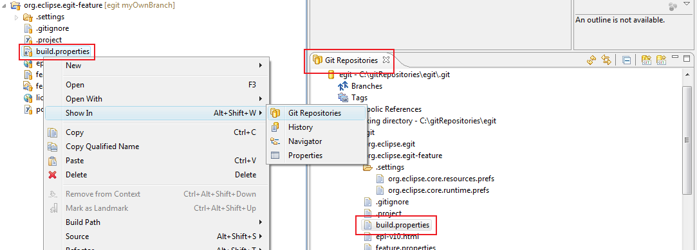
Initially, the Git Repositories View is empty. In order to add Repositories to it, there are several options:
In order to clone a Repository, refer to the chapter "Cloning remote Repositories". After a successful clone operation, the newly cloned Repository should appear in the Git Repositories View automatically.
You can also use the "Clone a Git Repository" button from the view's toolbar to start the Clone wizard:
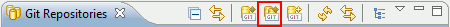
Please refer to the description in "Cloning remote Repositories" about how to use the wizard.
You can add a Repository from your local file system to the Git Repositories View without cloning it. This can be helpful if you are setting up a new Eclipse workspace and want to re-use your Git Repositories. Use the "Add an existing Git Repository" button from the view's toolbar:
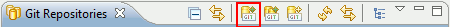
A dialog will appear prompting you for a directory of your local file system. After selecting the correct directory, you can hit the "Search" button to see a list of Git Repositories in this directory. You can then select some or all found Repositories and add them to the view using "Ok":
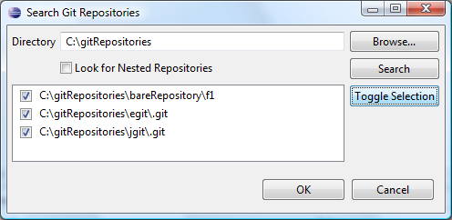
As a shortcut,it is also possible to just paste the local file system path of a Git Repository from the clipboard to this view. In order to do so, copy the path of a Git Repository (the path to the repository's .git folder) to the clipboard, then open the context menu on the view panel (i.e. not selecting a node):
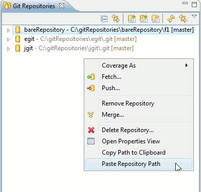
or simply perform Edit->Paste from the main menu (or the corresponding keyboard shortcut). If the clipboard content is not suitable, an error popup will be displayed, otherwise the added Repository should appear automatically.
After the view has been populated with some Repositories, it should look like this:
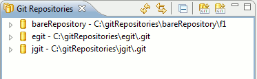
The following screenshot shows the topmost two levels of the Git Repositories View:
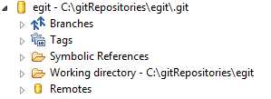
The root node represents the Repository itself. The node text indicates the name of the Repository and it's location in the local file system. The "Branches" and "Tags" nodes allow browsing and manipulation of tags and branches. The "Symbolic References" node lists other references which are not branches or tags, most notably the "HEAD" symbolic reference.
The "Working directory" node displays the location and structure of the working directory on the local file system (only in case of a development, or non-bare Repository, for bare Repositories, this node is always a leaf).
Finally, the "Remotes" node allows browsing and manipulating the remote configurations used for Fetch and Push.
In order to work with the contents of a Git Repository, its files and folders must be imported into the Eclipse workspace in the form of projects. While the Git Clone wizard allows to do such imports directly after cloning, the Git Repositories View allows to trigger project imports independently of the clone operation.
The "Import Projects..." context menu is available on the "Repository" node as well as on any "Folder" node within the "Working Directory" node and the "Working Directory" node itself:
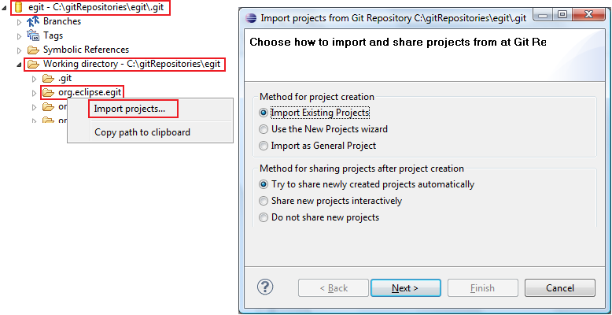
The rationale for offering the "Import Projects..." action on several nodes is that some of the wizards used for importing projects can take the file system directory into account, for example the "Import Existing Projects" wizard. If the import is started from the "Repository" or the "Working Directory" node, the working directory of the repository is set as context, otherwise the directory corresponding to the currently selected "Folder" node.
The details of project import are discussed elsewhere.
The "Branches" node allows to create, browse, checkout and delete local and remote branches. The "Tags" node allows for browsing and checking out of tags. For better readability, branches are organized in two sub-nodes for local and remote branches, respectively, and only the shortened names are displayed, e.g. instead of "refs/heads/master" you would find an entry "master" under the "Local Branches" node, instead of "refs/remotes/origin/master" the shortened name "origin/master" is displayed under the "Remote Branches" node. Similarly, tag names are shortened by omitting the "refs/tags/" prefix:
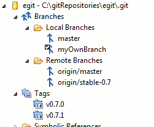
Branches and tags can be checked out by either double-clicking on the respective node or by selecting the corresponding context menu entry.
Local branches can be created using a simple wizard. After selecting the corresponding context menu entry (available on the "Branches", the "Local Branches", and on any "Branch" node), you are asked to enter a source branch and a name for the new branch. Depending on whether you have called the wizard from a "Branch" node, the source branch drop-down will be pre-selected with either the selected branch or the currently checked-out branch:
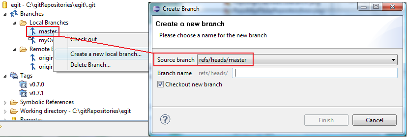
You can change the source branch using the drop-down. By default, the newly created branch will be checked out after creation. Deselect the corresponding checkbox on the wizard if you don't want this to happen.
Branch deletion is done using the corresponding context menu entry.
There are two ways to determine which branch or tag is currently checked out: the checked out branch/tag node is decorated with a little check mark and the "HEAD" entry under the "Symbolic References" node shows the (full) name of the checked out branch:
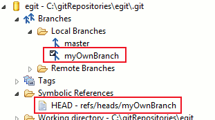
If HEAD is "detached", i.e. is not pointing to the tip of a local branch but to a commit or tag, then none or several "checked-out" markers may appear in the tree, since any number of remote branch or tags may point to the currently checked out commit. The state you are in while your HEAD is detached is not recorded by any branch (which is natural --- you are not on any branch).
The "Working Directory" node visualizes the local file system structure of the Git Repository. It is also possible to open a text editor on the files:
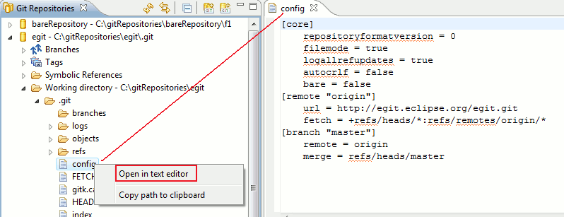
Also, on all file and folder nodes as well as on the "Repository" node, an option is offered to copy the (file-system specific) path to the clipboard. This is sometimes useful when the path is needed, for example to open a directory using a file browser or to copy and paste Repositories between view instances (see above about how to add Repositories to the view). The "Copy to Clipboard" action is also available using Edit->Copy (or the corresponding keyboard shortcut).
Integration with the generic "Properties" view in Eclipse allows to view and edit the Git Configuration (global and repository-specific configuration). If the "Properties" view is open, it is updated automatically when a "Repository" node is selected. For convenience, an "Open Properties view" action is provided in the context menu:
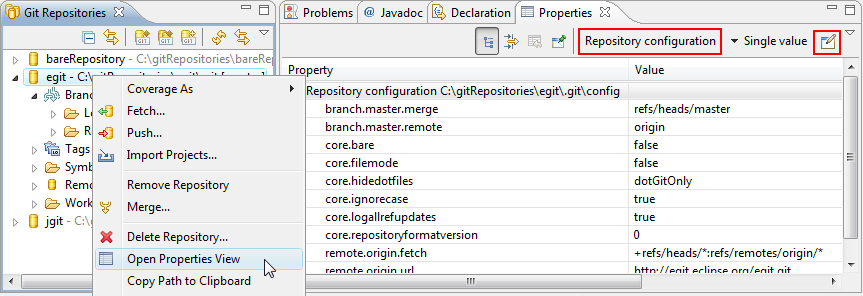
The "Remotes" node allows for browsing and editing Remote configurations. Each Remote configuration has a name and either a Push Specification, a Fetch Specification, or both. If a "Remote Configuration" node or any of its children is selected, the "Properties" view will show a summary of the Remote configuration. In this example: there is a Remote configuration named "origin" which only has a Fetch Specification, but no Push Specification:
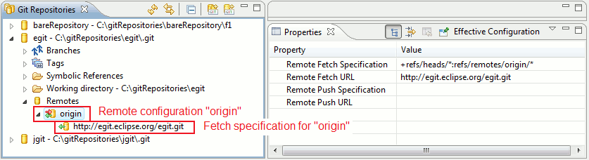
Menu actions are provided to add, configure, and remove Remote configurations and Fetch and Push Specifications.
It is possible to execute fetch and push directly (i.e. without a wizard) on the respective "Fetch" and "Push" nodes:
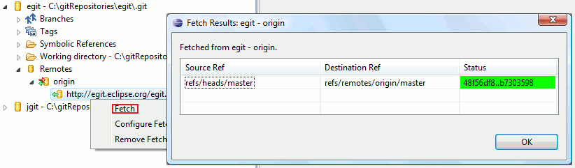
Note that the fetch or push operation will be executed immediately in an asynchronous job; on completion you will get a confirmation pop-up displaying the fetch result.
This is done using a context menu action on the "Remotes" node. A wizard is started asking for the name of the new configuration and whether to configure Fetch, Push, or both:

The details of Remote configuration are explained elsewhere. Upon completion, the new Remote configuration will be visible:
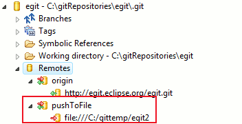
It is also possible to add, remove, or change Fetch/Push Specifications for an existing Remote configuration using the context menu.
The view is auto-refreshed periodically. The "Refresh" button in the toolbar allows to trigger an immediate refresh:
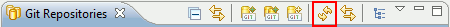
If the "Link with selection" toggle is enabled, the file or folder corresponding to the current workbench selection will be displayed automatically:
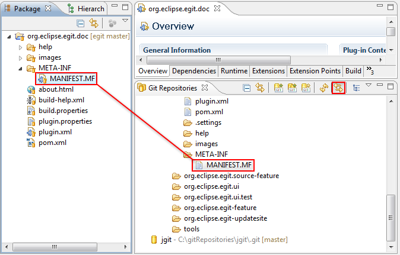
"Bare" Git Repositories (as opposed to "development" or "standard" Repositories) have no working directory by definition, so all actions related to the working directory (check-out, project import, browsing the working directory) are not available for such Repositories. The "Bare-ness" of a Repository is visualized on the "Working Directory" node, which is always a leaf:
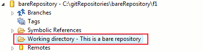
This is offered as a menu action on the "Repository" node. Note that this does not delete the Repository, but just removes the node from the view. If there are projects in the workspace which are located in the working directory of the Repository, the user will be prompted to confirm deletion of these projects from the Eclipse workspace.
|
|

|
|
| Patches | Updating This Document |